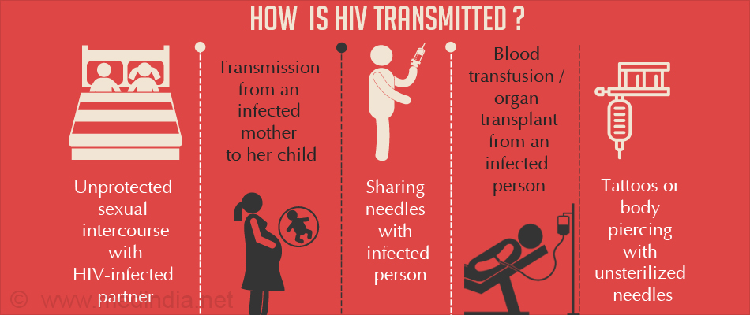

HIV (human immunodeficiency virus)
The human immunodeficiency viruses (HIV) are two species of Lentivirus (a subgroup of retrovirus) that infect humans.
The human immunodeficiency virus (HIV) targets the immune system and weakens people's defense against many infections and some types of cancer that people with healthy immune systems can fight off. As the virus destroys and impairs the function of immune cells, infected individuals gradually become immunodeficient. Immune function is typically measured by CD4 cell count.
The most advanced stage of HIV infection is acquired immunodeficiency syndrome (AIDS), which can take many years to develop if not treated, depending on the individual. AIDS is defined by the development of certain cancers, infections or other severe long-term clinical manifestations.
Origin of HIV
The origin of the Human Immunodeficiency Virus (HIV) has been a subject of scientific research and debate since the virus was identified in the 1980s. There is now a wealth of evidence on how, when and where HIV first began to cause illness in humans.
Details of the origin of HIV remain unclear. However, a lentivirus that is genetically similar to HIV has been found in chimpanzees and gorillas in western equatorial Africa. That virus is known as simian immunodeficiency virus (SIV), and it was once widely thought to be harmless in chimpanzees. However, in 2009 a team of researchers investigating chimpanzee populations in Africa found that SIV in fact causes AIDS-like illness in the animals. SIV-infected chimpanzees have a death rate that is 10 to 16 times higher than their uninfected counterparts. The practice of hunting, butchering, and eating the meat of chimpanzees may have allowed transmission of the virus to humans, probably in the late 19th or early 20th century. The strain of SIV found in gorillas is known as SIVgor, and it is distinct from the strain found in chimpanzees. Because primates are suspected of being the source of HIV, AIDS is considered a zoonosis, an infection that is shared by humans and other vertebrate animals.
HIV is a type of lentivirus, which means it attacks the immune system. In a similar way, the Simian Immunodeficiency Virus (SIV) attacks the immune systems of monkeys and apes.
Research found that HIV is related to SIV and there are many similarities between the two viruses. HIV-1 is closely related to a strain of SIV found in chimpanzees, and HIV-2 is closely related to a strain of SIV found in sooty mangabeys.
Studies of some of the earliest known samples of HIV provide clues about when it first appeared in humans and how it evolved. The first verified case of HIV is from a blood sample taken in 1959 from a man living in what is now Kinshasa in the Democratic Republic of Congo. The sample was retrospectively analysed and HIV detected. There are numerous earlier cases where patterns of deaths from common opportunistic infections, now known to be AIDS-defining, suggest that HIV was the cause, but this is the earliest incident where a blood sample can verify infection.
Signs and symptoms
Some people have flu-like symptoms within 2 to 4 weeks after infection (called acute HIV infection). These symptoms may last for a few days or several weeks. Possible symptoms include:
- Fever
- Chills
- Rash
- Night sweats
- Muscle aches
- Sore throat
- Fatigue
- Swollen lymph nodes
- Mouth ulcers
But some people may not feel sick during acute HIV infection. These symptoms don’t mean you have HIV. Other illnesses can cause these same symptoms.
See a health care provider if you have these symptoms and think you may have been exposed to HIV. Getting tested for HIV is the only way to know for sure.
Transmission
HIV can be transmitted via the exchange of a variety of body fluids from infected people, such as blood, breast milk, semen and vaginal secretions. HIV can also be transmitted from a mother to her child during pregnancy and delivery. Individuals cannot become infected through ordinary day-to-day contact such as kissing, hugging, shaking hands, or sharing personal objects, food or water.
It is important to note that people with HIV who are taking ART and are virally suppressed do not transmit HIV to their sexual partners. Early access to ART and support to remain on treatment is therefore critical not only to improve the health of people with HIV but also to prevent HIV transmission.
Diagnosis
HIV can be diagnosed through rapid diagnostic tests that provide same-day results. This greatly facilitates early diagnosis and linkage with treatment and care. People can also use HIV self-tests to test themselves. However, no single test can provide a full HIV diagnosis; confirmatory testing is required, conducted by a qualified and trained health or community worker at a community centre or clinic. HIV infection can be detected with great accuracy using WHO prequalified tests within a nationally approved testing strategy.
Most widely-used HIV diagnostic tests detect antibodies produced by the person as part of their immune response to fight HIV. In most cases, people develop antibodies to HIV within 28 days of infection. During this time, people experience the so-called window period – when HIV antibodies haven’t been produced in high enough levels to be detected by standard tests and when they may have had no signs of HIV infection, but also when they may transmit HIV to others. After infection, an individual may transmit HIV transmission to a sexual or drug-sharing partner or for pregnant women to their infant during pregnancy or the breastfeeding period.
Following a positive diagnosis, people should be retested before they are enrolled in treatment and care to rule out any potential testing or reporting error. Notably, once a person diagnosed with HIV and has started treatment they should not be retested.
While testing for adolescents and adults has been made simple and efficient, this is not the case for babies born to HIV-positive mothers. For children less than 18 months of age, serological testing is not sufficient to identify HIV infection – virological testing must be provided as early as birth or at 6 weeks of age. New technologies are now becoming available to perform this test at the point of care and enable same-day results, which will accelerate appropriate linkage with treatment and care.
Prevention
Individuals can reduce the risk of HIV infection by limiting exposure to risk factors. Key approaches for HIV prevention, which are often used in combination, include:
- male and female condom use;
- testing and counselling for HIV and STIs;
- testing and counselling for linkages to tuberculosis (TB) care;
- voluntary medical male circumcision (VMMC);
- use of antiretroviral drugs (ARVs) for prevention;
- harm reduction for people who inject and use drugs; and
- elimination of mother-to-child transmission (MTCT) of HIV.
Treatment
HIV disease can be managed by treatment regimens composed of a combination of three or more antiretroviral (ARV) drugs. Current antiretroviral therapy (ART) does not cure HIV infection but highly suppresses viral replication within a person's body and allows an individual's immune system recovery to strengthen and regain the capacity to fight off opportunistic infections and some cancers.
Since 2016, WHO has recommended that all people living with HIV be provided with lifelong ART, including children, adolescents, adults and pregnant and breastfeeding women, regardless of clinical status or CD4 cell count.
By June 2021, 187 countries had already adopted this recommendation, covering 99% of all people living with HIV globally. In addition to the treat all strategy, WHO recommends a rapid ART initiation to all people living with HIV, including offering ART on the same day as diagnosis among those who are ready to start treatment. By June 2021, 82 low- and middle-income countries reported that they have adopted this policy, and approximately half of them reported country-wide implementation.
Globally, 28.2 million people living with HIV were receiving ART in 2021. The global ART coverage rate was 73% [56–88%] in 2020. However, more efforts are needed to scale up treatment, particularly for children and adolescents. Only 54% [37–69%] of children (0–14 years old) were receiving ART at the end of 2020.
Global HIV & AIDS statistics
GLOBAL HIV STATISTICS
- 28.2 million people were accessing antiretroviral therapy as of 30 June 2021.
- 37.7 million [30.2 million–45.1 million] people globally were living with HIV in 2020.
- 1.5 million [1.0 million–2.0 million] people became newly infected with HIV in 2020.
- 680 000 [480 000–1.0 million] people died from AIDS-related illnesses in 2020.
- 79.3 million [55.9 million–110 million] people have become infected with HIV since the start of the epidemic.
- 36.3 million [27.2 million–47.8 million] people have died from AIDS-related illnesses since the start of the epidemic.
New HIV infections
- New HIV infections have been reduced by 52% since the peak in 1997.
- In 2020, around 1.5 million [1.0 million–2.0 million] people were newly infected with HIV, compared to 3.0 million [2.1 million–4.2 million] people in 1997.
- Women and girls accounted for 50% of all new infections in 2020.
- Since 2010, new HIV infections have declined by 31%, from 2.1 million [1.5 million–2.9 million] to 1.5 million [1.0 million–2.0 million] in 2020.
- Since 2010, new HIV infections among children have declined by 53%, from 320 000 [210 000–510 000] in 2010 to 150 000 [100 000–240 000] in 2020.